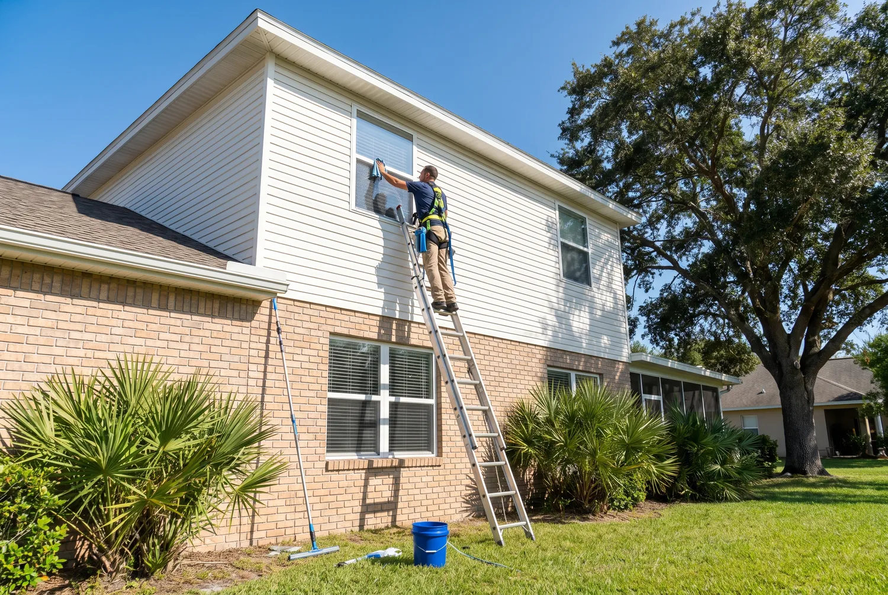
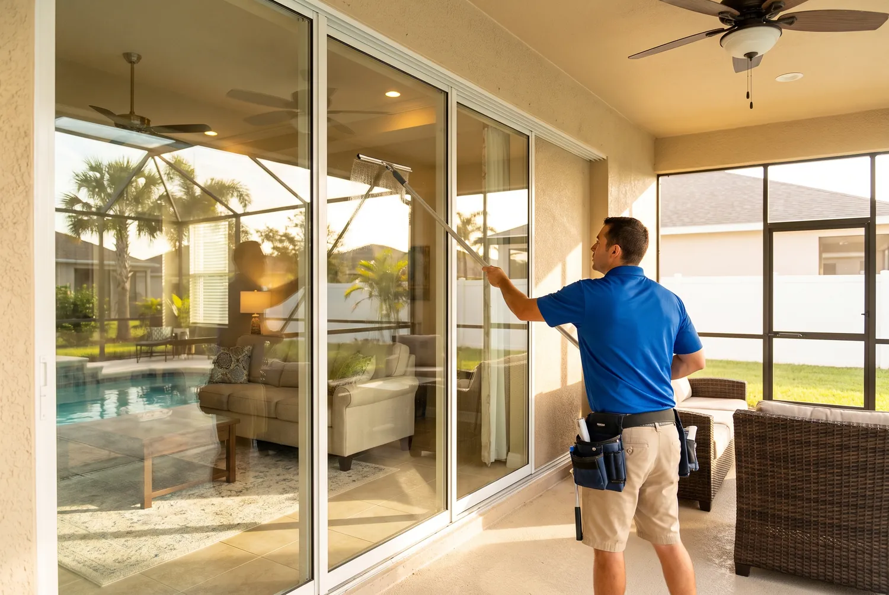

What Is Window Cleaning in Jacksonville?
Window cleaning in Jacksonville means more than a quick wipe with glass spray. The First Coast climate throws three things at glass that most of the country does not deal with year-round: salty air off the Atlantic and the St. Johns River, hard water spotting, and a heavy pollen season each spring. A proper cleaning removes all three, inside and out, without leaving the streaks or film that DIY methods tend to leave behind on humid days.
For homeowners, this usually covers the exterior glass, screens, and tracks on every window, with interior cleaning added on request. For businesses, it typically means storefront glass, entry doors, and office windows kept on a recurring schedule so the building always looks presentable to customers walking by.

When Do You Need Window Cleaning?
Cloudy or spotted glass
White, cloudy patches that will not wipe off with a paper towel are mineral deposits from hard water, not surface dirt, and need a different approach to remove.
After pollen season
Late February through May, Jacksonville's pine and oak pollen coats everything, including window glass and screens, leaving a yellow-green film.
Living near the coast
Homes within a couple miles of the beaches or the river build up salt residue from condensation fast, and it accelerates window seal wear if it is left alone.
Before listing your home
Clean glass is one of the cheapest ways to make a home show better in photos and in person before it goes on the market.
After construction or a storm
Overspray, dust, and storm debris from Florida's hurricane season leave residue that regular cleaning tools often cannot fully lift.
Recurring commercial upkeep
Storefronts and offices along busy Jacksonville corridors need monthly attention to keep glass looking presentable to walk-in customers.
How Window Cleaning Works in Jacksonville
Every visit follows the same core process, adjusted for hard water or salt buildup where needed:
- Rinse first. Loose dirt, sand, and pollen are rinsed off before any scrubbing starts, so grit does not scratch the glass.
- Scrub top to bottom. A soft scrubber loaded with cleaning solution works each pane from the top down in overlapping passes.
- Rinse again. A second rinse clears soap and loosened residue from the corners and edges.
- Squeegee dry. A straight top-to-bottom squeegee pull removes the water and prevents drip streaks, with edges detailed by microfiber cloth.
- Hard water treatment when needed. Glass with heavy mineral spotting gets a pure-water rinse that dissolves deposits without leaving new residue behind, unlike soap-based cleaners.
Screens are popped out, rinsed, and dried separately, and tracks are brushed and vacuumed out as part of a full-service visit. Most single-story Jacksonville homes are finished in under two hours.
Why Jacksonville Residents Choose Us
Pure-water finish for hard water spots
A two-stage purification rinse strips dissolved minerals down to near zero, which is the only reliable way to clear the calcium spotting common with Jacksonville's municipal and St. Johns County well water.
Local scheduling that fits Florida weather
Appointments are built around Northeast Florida's rain patterns and hurricane season, so a sudden afternoon storm means a quick reschedule, not a wasted trip.
Fully insured, straightforward pricing
You get an upfront estimate before work starts based on window count and story height, with no surprise add-on charges once the crew is on site.
How Much Does Window Cleaning Cost in Jacksonville?
Pricing depends mostly on how many windows you have, how many stories, and whether you want interior glass included. Here is what Jacksonville homeowners typically pay:
| Home Size | Exterior Only | Interior + Exterior |
|---|---|---|
| Small (10–15 windows) | $150–$225 | $200–$350 |
| Medium (15–25 windows) | $200–$375 | $300–$500 |
| Large (25–40 windows) | $350–$500 | $450–$650 |
| Estate (40+ windows) | $500–$800+ | $650–$1,200+ |
Add-ons run separately: screen cleaning is about $3 to $7 per screen, track and sill detailing is $2 to $5 per window, hard water stain removal is $10 to $25 per pane depending on severity, and skylights run $15 to $35 each. Commercial exterior-only work is typically priced per pane, often in the $7.50 to $9.30 range for storefront and low-rise glass. Every job gets a firm number before anyone starts, based on an actual window count rather than a rough guess.

Is Window Cleaning Right for You?
This service makes the most sense if you can check off any of these:
- Your windows have not been professionally cleaned in over 3 months, especially if you live near the coast.
- You are seeing cloudy spots that a normal glass cleaner will not remove.
- You are preparing to list your home or host a major event.
- Your business storefront gets foot traffic and needs to look presentable every day.
If your windows were cleaned in the last few weeks and are not near the coast or heavy tree cover, you likely do not need a visit yet. A quick call can help you figure out where you stand and whether it is worth scheduling now.
Call for a Free EstimateFrequently Asked Questions
How often should I get my windows cleaned in Jacksonville?
Most inland Jacksonville homes do well with a cleaning every 2 to 4 months. If you live within a couple miles of the coast, plan on every 6 weeks to monthly, since salt air leaves a residue that builds up fast. Homes with heavy tree cover or pollen exposure in February through May often need an extra visit that season.
Why do my windows have cloudy white spots that will not wipe off?
That cloudiness is almost always hard water mineral deposit, not dirt. Jacksonville's municipal water typically runs 150 to 300 TDS, and well water in parts of St. Johns County tests even higher. Regular soap and a rag will not remove it because the minerals have bonded to the glass. It takes a mineral-dissolving treatment or a pure-water finish to lift it back off.
Do you clean window screens and tracks too?
Yes. Screen cleaning and track and sill detailing are offered as add-ons alongside a standard window cleaning visit in Jacksonville. Tracks collect sand, pollen, and dead insects that regular glass cleaning does not touch, so we brush and vacuum them out as part of a full-service visit.
Is it safe to clean windows on a two-story Jacksonville home?
It can be, with the right equipment. Second-story windows are cleaned with extension poles and water-fed brushes from the ground whenever possible, and stabilized ladder work when needed. Homeowners attempting this themselves should be cautious on wet grass or uneven St. Augustine sod, which is a common source of ladder slips in Florida yards.
Do you offer both interior and exterior window cleaning?
Yes, both are available for Jacksonville homes and businesses. Exterior-only service is the most common request and clears the salt film and pollen that build up outside. Adding interior cleaning roughly doubles the labor time per window but is worth it before a home sale, a big event, or simply once or twice a year for a full reset.
What is the difference between residential and commercial window cleaning?
Residential cleaning is billed and scheduled around a single home, its window count, and story height. Commercial cleaning covers storefronts, offices, and low-rise buildings in Jacksonville, is usually priced per pane for exterior glass, and is often set up on a recurring monthly schedule so the glass never gets a chance to build up grime. See our full list of services for details on both.
Get a Free Window Cleaning Estimate
Tell us a bit about your home or business and we'll follow up with a real price range the same day. No obligation, no pushy follow-up calls.
Prefer to Talk Now?
Service Area
Riverside, Avondale, San Marco, Southside, Mandarin, Arlington, Orange Park, Jacksonville Beach, Atlantic Beach, and Ponte Vedra Beach.
Ready for Streak-Free Windows?
Call or send a quick message and get a free estimate for your Jacksonville home or business.
Call (904) 944-7358